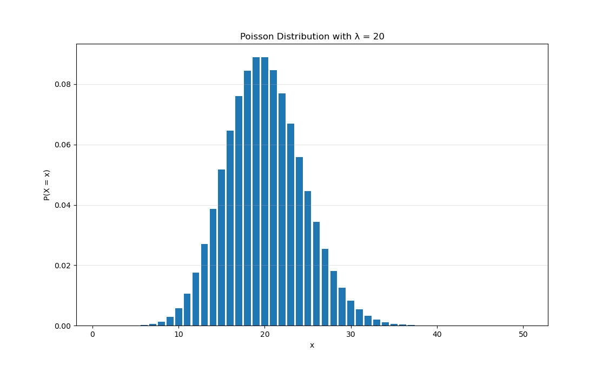
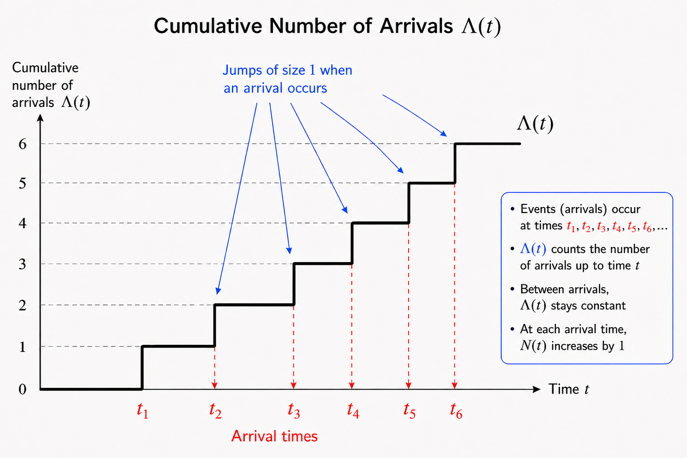
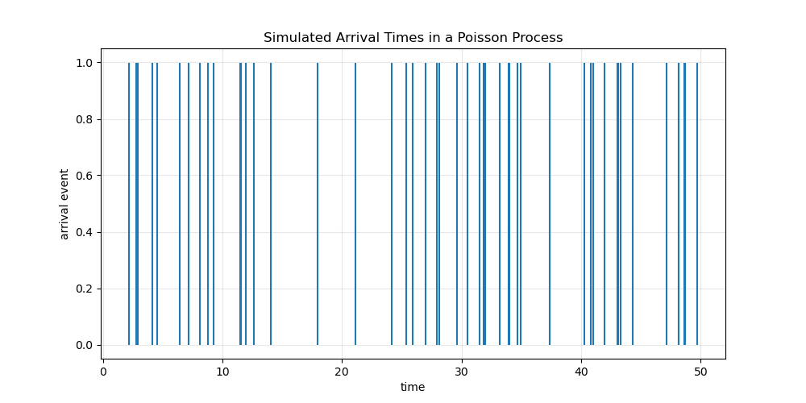
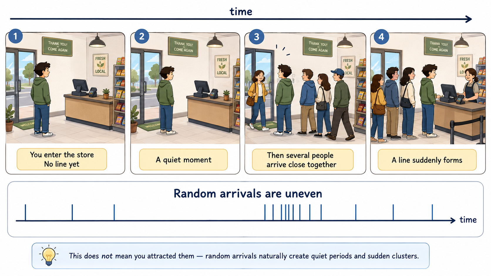

When you enter a store and there is nobody in line, then a few minutes later many people suddenly appear, it may feel like, “Did I attract all these customers?”
But actually, this kind of situation can happen naturally when customer arrivals are random.
If people arrive at a store independently and randomly, their arrival times are not evenly spaced. Sometimes nobody comes for a while, and sometimes several people arrive close together. This random clustering can be described by a Poisson process.
So the fact that many people arrived after you entered the store does not necessarily mean you caused it. You may have simply arrived just before a random burst of customers.
A Poisson process is a mathematical model used to describe random arrivals over time, such as customers entering a store, phone calls arriving at a call center, cars passing along a road, or particles hitting a detector.
Here, I would like to explain the math behind this as simply as possible, without assuming any prior knowledge.
Definition: if an event happens an average of \(\lambda\) times during a unit time interval \(t\), then the probability that it happens exactly \(k\) times is expressed as
\[ P(X=k)= \frac{\lambda^{k}e^{-\lambda}}{k!} \]
Let’s see an example. Suppose that, on average, 20 people come to a store in one hour. What is the probability that exactly 40 people come in one hour?
Here, \(\lambda\) is \(20\) and \(k\) is \(40\).
\[ P(X=40)= \frac{20^{40}e^{-20}}{40!}=0.00278\% \]
Here, \(e\) is Euler’s number, also called the natural constant. The distribution is written as
\[ X \sim \mathrm{Poisson}(\lambda) \]
Here is the Poisson distribution for \(\lambda = 20\) from \(x=1\) to \(50\).

Historically, it is said that Poisson developed this distribution while studying rare events, such as soldiers being killed by horse kicks. In that example, the average was about 0.61 people per year. Since then, the Poisson distribution has been used to predict the number of customers coming to stores or banks, as well as many other random arrival events.
Now you might wonder: why does the equation look like this? Let’s derive it.
Consider the following equation:
\[ \lim_{\lambda = np,\; n \to \infty} \binom{n}{k} p^k (1-p)^{n-k} = \frac{\lambda^k e^{-\lambda}}{k!} \]
Proof:
\[ \begin{aligned} \lim_{\substack{n \to \infty \\ p \to 0 \\ np=\lambda}} \binom{n}{k}p^k(1-p)^{n-k} &= \lim_{n \to \infty} \binom{n}{k} \left(\frac{\lambda}{n}\right)^k \left(1-\frac{\lambda}{n}\right)^{n-k} \\ &= \lim_{n \to \infty} \frac{n(n-1)\cdots (n-k+1)}{n^k} \left(\frac{\lambda^k}{k!}\right) \left(1-\frac{\lambda}{n}\right)^n \left(1-\frac{\lambda}{n}\right)^{-k} \\ &= \frac{\lambda^k e^{-\lambda}}{k!} \end{aligned} \]
Here, we use the fact that
\[ e = \lim_{x \to 0}(1+x)^{\frac{1}{x}} \]
Therefore,
\[ \begin{aligned} \left(1-\frac{\lambda}{n}\right)^n &= \left[\left(1-\frac{\lambda}{n}\right)^{-\frac{n}{\lambda}}\right]^{-\lambda} \\ &\to e^{-\lambda} \end{aligned} \]
as \(n \to \infty\).
Also,
\[ \frac{n(n-1)\cdots(n-k+1)}{n^k} \to 1 \]
and
\[ \left(1-\frac{\lambda}{n}\right)^{-k} \to 1. \]
Therefore, the binomial distribution becomes the Poisson distribution in this limit.
But why does this equation become the Poisson distribution?
Consider the following situation. Suppose we divide a unit time interval into \(n\) small cells. In each small cell, an event can happen with probability \(p\). Then the number of events follows a binomial distribution:
\[ X \sim B(n,p) \]
The expectation value of the binomial distribution is
\[ E[X] = np. \]
For a Poisson process, we want the average number of events in the unit time interval to stay fixed. We call this fixed average \(\lambda\), so
\[ np = \lambda. \]
Then, as we make the cells smaller and smaller, we take the limit
\[ n \to \infty, \qquad p \to 0, \qquad np=\lambda. \]
In this limit, the binomial distribution becomes
\[ P(X=k)=\frac{\lambda^k e^{-\lambda}}{k!}. \]
This is the Poisson distribution.
A Poisson process \(\Lambda(t)\) can be written as
\[ \Lambda(t) \sim \mathrm{Pois}(\lambda t). \]
Here, \(\lambda\) is called the arrival rate. You can think of \(\Lambda(t)\) as the total number of events that have happened up to time \(t\).
So far, we have only introduced the definition of a Poisson process. Now, let’s look at an example.
The figure below shows how the cumulative number of arrivals increases over time.

Here, I want to briefly explain why \(\lambda\) is called the arrival rate.
First, what is an arrival rate? It is basically the average number of arrivals per unit time. For example, if \(\lambda = 20\) people per hour, then on average 20 people arrive in one hour.
Now, let \(h\) be a very small time interval. We want to consider the probability that exactly one person arrives during the small time interval from \(t\) to \(t+h\).
This event can be written as
\[ \Lambda(t+h)-\Lambda(t)=1. \]
Because of the stationary increment property of a Poisson process, the number of arrivals only depends on the length of the time interval, not on the starting time \(t\). Therefore,
\[ \Lambda(t+h)-\Lambda(t) \sim \mathrm{Pois}(\lambda h). \]
Then the probability that exactly one person arrives during this small time interval is
\[ P(\Lambda(t+h)-\Lambda(t)=1) = \frac{(\lambda h)^1 e^{-\lambda h}}{1!}. \]
So,
\[ P(\Lambda(t+h)-\Lambda(t)=1) = \lambda h e^{-\lambda h}. \]
If we divide this probability by the length of the time interval \(h\), we get
\[ \frac{P(\Lambda(t+h)-\Lambda(t)=1)}{h} = \lambda e^{-\lambda h}. \]
Now, taking the limit as \(h \to 0\),
\[ \lim_{h \to 0} \lambda e^{-\lambda h} = \lambda. \]
Therefore, \(\lambda\) represents the probability rate of one arrival in a very small time interval. This is why \(\lambda\) is called the arrival rate.
So far, in the Poisson process, we have mainly cared about the number of events that happen during a given time interval. However, we may also want to know the time between events. This is important because we can generate random arrival times from this probability distribution.
The answer is the exponential distribution.
Let \(T\) be the waiting time until the next event occurs.
We want to find the probability distribution of \(T\).
If no event happens during the time interval from \(0\) to \(T\), then the number of events in that interval is zero. Since the number of events follows a Poisson distribution,
\[ P(N(T)=0)=\frac{(\lambda T)^0 e^{-\lambda T}}{0!}. \]
Therefore,
\[ P(N(T)=0)=e^{-\lambda T}. \]
This means that the probability that no event happens before time \(T\) is
\[ P(\text{no event before time }T)=e^{-\lambda T}. \]
So the probability that at least one event happens before time \(T\) is the complementary probability:
\[ P(\text{events before T})=1-e^{-\lambda t}. \]
This is the cumulative distribution function, or CDF, of the waiting time \(T\).
To get the probability density function, we take the derivative:
\[ f(t)=\frac{d}{dt}\left(1-e^{-\lambda t}\right). \]
Then,
\[ f(t)=\lambda e^{-\lambda t}. \]
Therefore, the waiting time between events follows an exponential distribution:
\[ T \sim \mathrm{Exp}(\lambda). \]
This means that in a Poisson process, the time between arrivals is exponentially distributed.
Now we know that the time between events follows an exponential distribution. Let’s try to simulate this process.
Since we want to generate random waiting times, we can use the cumulative distribution function:
\[ P(\text{arrival before time } t)=1-e^{-\lambda t}. \]
Let
\[ u = P(\text{arrival before time } t). \]
Then
\[ u = 1-e^{-\lambda t}. \]
Solving this equation for \(t\), we get
\[ t = -\frac{1}{\lambda}\log(1-u). \]
Since probability takes values between 0 and 1, we can generate a random number
\[ u \sim U(0,1). \]
Then the random waiting time can be generated by
\[ t = -\frac{1}{\lambda}\log(1-u). \]
This is called the inverse transform method. It allows us to generate exponentially distributed waiting times from uniform random numbers.
Let’s assume we have a time interval of 50 minutes and set
\[ \lambda = 1. \]
This means that, on average, one event occurs per minute. Therefore, the expected number of arrivals in 50 minutes is
\[ E[N(50)] = \lambda t = 1 \times 50 = 50. \]
The figure below shows the simulated arrival times. Each vertical line represents one arrival event.
import numpy as np
import matplotlib.pyplot as plt
lamb = 1
Tmax = 50
waiting_times = []
current_time = 0
while current_time < Tmax:
u = np.random.rand()
waiting_time = -(1 / lamb) * np.log(1 - u)
current_time += waiting_time
if current_time < Tmax:
waiting_times.append(waiting_time)
arrival_times = np.cumsum(waiting_times)
plt.figure(figsize=(10, 5))
for t in arrival_times:
plt.vlines(t, 0, 1)
plt.xlabel("time")
plt.ylabel("arrival event")
plt.title("Simulated Arrival Times in a Poisson Process")
plt.ylim(-0.05, 1.05)
plt.grid(alpha=0.3)
plt.show()The figure below shows simulated arrival times. Each vertical line represents one arrival event.

This figure illustrates the main idea of this note. Even though the average arrival rate is constant, the arrivals do not occur at regular intervals. Sometimes there is a long gap with no arrivals, while at other times several arrivals happen close together.
This is exactly why, when you enter a store and see nobody there, but then suddenly many people appear a few minutes later, it may feel like you somehow attracted them. However, the simulation shows that this kind of clustering can happen naturally, even when arrivals are completely random and independent.
In other words, random arrivals do not look evenly spaced. They naturally produce quiet periods and crowded periods. So the sudden formation of a line after you enter the store does not necessarily mean that you caused it. It may simply be a typical fluctuation of a Poisson process.
